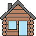
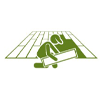

Phase 1: Select Your Region
No region selected
Phase 2: House Type
Would you prefer a house that's mostly bio-based or only partially made with bio-based materials?
Mostly bio‑based
Partially bio‑based

For mid‑ & high‑rise buildings, fully timber‑based houses are the only option.
This applies only to low‑rise buildings (1–2 floors).
Phase 3: Area of Application
Where do you want to apply the material?
Footing
 Structure
Structure
Slabs
Ext. wall
 Int. wall
Int. wall
Insulation
Cladding

Flooring
Roof
Finish
Phase 4: Goals / Needs
Pick between 1 and 3 goals to be achieved:
Affordability
Safety
Thermal comfort
Noise Control
Aesthetics
Fast Construction
 Energy Efficiency
Energy Efficiency
Breathability
Phase 5: Suggested Materials
Here are the materials based on your selection:
Click next to calculate the CO₂ emissions of the suggested materials.
Phase 6: CO₂ Emissions of Suggested Materials
Processing...
Thank You!
Thank you for using the Material Selection Tool!
We’d really appreciate your feedback — please take a moment to fill out the questionnaire to assess the
tool's usability for future improvements.